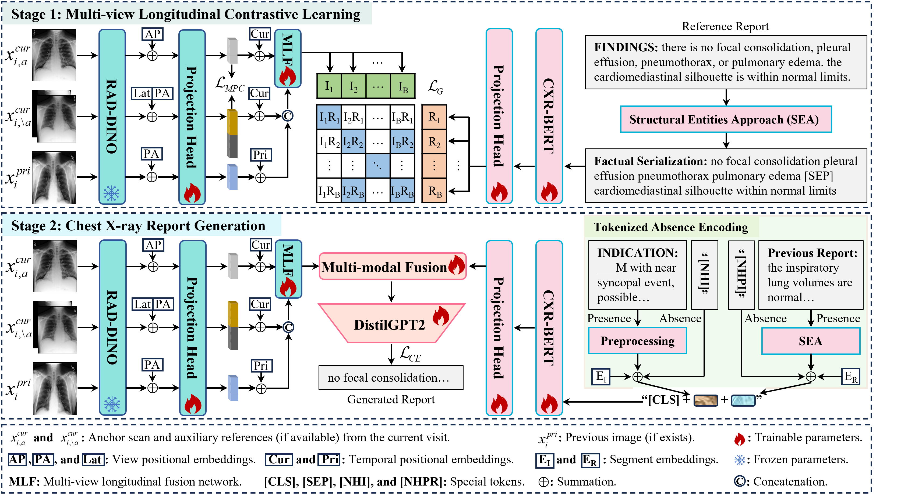
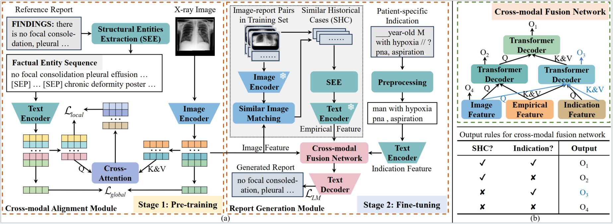
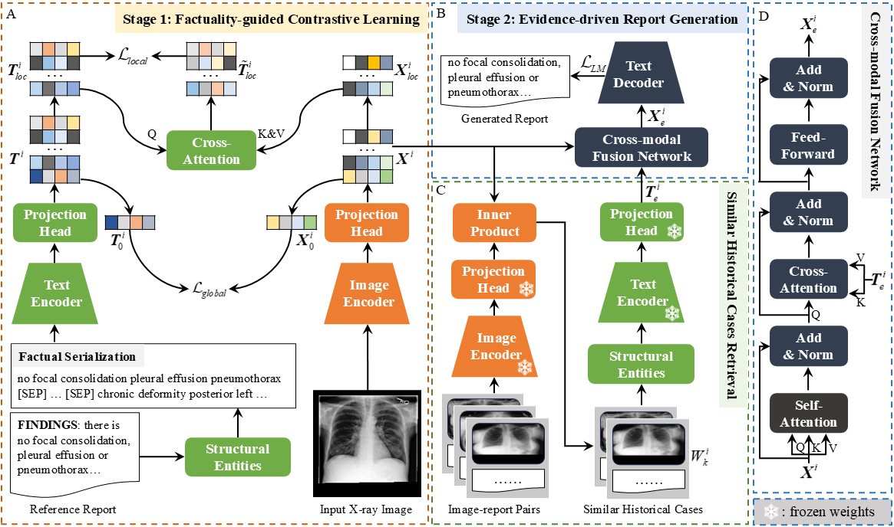

Kang Liu (刘糠)
Ph.D. Candidate Email: kangliu422@gmail.com Wechat: kangliu422 |


BiographyI am currently a Ph.D. candidate at Xidian University , advised by Prof. Qiguang Miao . My research focuses on Radiology Report Generation, Medical Vision-Language Models, and Anomaly Detection. I am passionate about advancing trustworthy and clinically applicable AI systems for medical imaging. |
News
|
Selected Publications |
 |
arXiv'2603
Seeing Like Radiologists: Context-and Gaze-Guided Vision-Language Pretraining for Chest X-rays Kang Liu, Zhuoqi Ma, Siyu Liang, Yunan Li, Xiyue Gao, Chao Liang, Kun Xie, Qiguang Miao arXiv , 2026 [paper] [Code] |
 |
AAAI'26
PriorRG: Prior-Guided Contrastive Pre-training and Coarse-to-Fine Decoding for Chest X-ray Report Generation Kang Liu, Zhuoqi Ma, Zikang Fang, Yunan Li, Kun Xie, Qiguang Miao Proceedings of the AAAI Conference on Artificial Intelligence, 2026 [AAAI] [arXiv] [Code] [Poster] |
|
 |
CVPR'25
Enhanced Contrastive Learning with Multi-view Longitudinal Data for Chest X-ray Report Generation Kang Liu, Zhuoqi Ma, Xiaolu Kang, Yunan Li, Kun Xie, Zhicheng Jiao, Qiguang Miao IEEE/CVF Conference on Computer Vision and Pattern Recognition (CVPR) , 2025 [Paper] [Code] [Poster] |
|
 |
MICCAI'24
Structural entities extraction and patient indications incorporation for chest x-ray report generation Kang Liu, Zhuoqi Ma, Xiaolu Kang, Zhusi Zhong, Zhicheng Jiao, Grayson Baird, Harrison Bai, Qiguang Miao Medical Image Computing and Computer Assisted Intervention (MICCAI) , 2024 [Paper] [Code] [Poster] |
|
 |
ESWA'26
Factual Serialization Enhancement: A Key Innovation for Chest X-ray Report Generation Kang Liu, Zhuoqi Ma, Mengmeng Liu, Zhicheng Jiao, Xiaolu Kang, Qiguang Miao, Kun Xie Expert Systems with Applications, 2026 [Paper] [Code] |
Honors and Awards
|
Review
|
Visitor MapVisitors from around the world. Copyright© 2026 Kang Liu. |